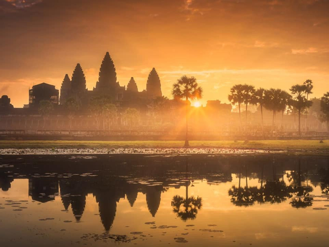
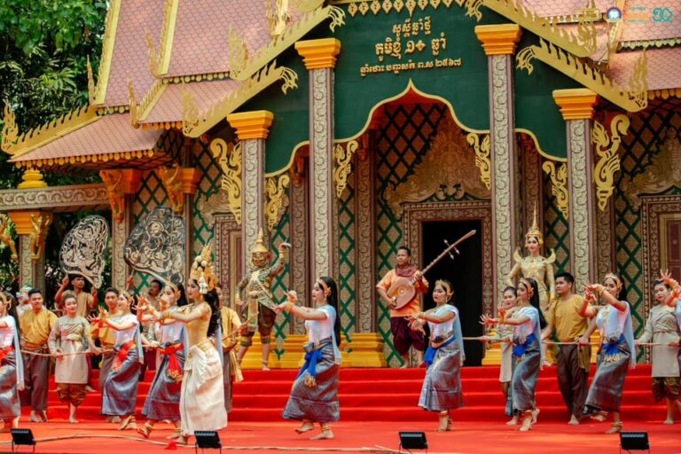
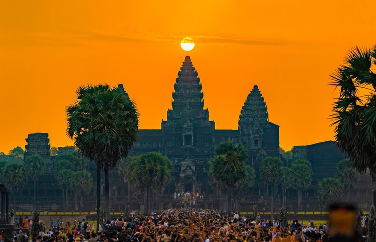
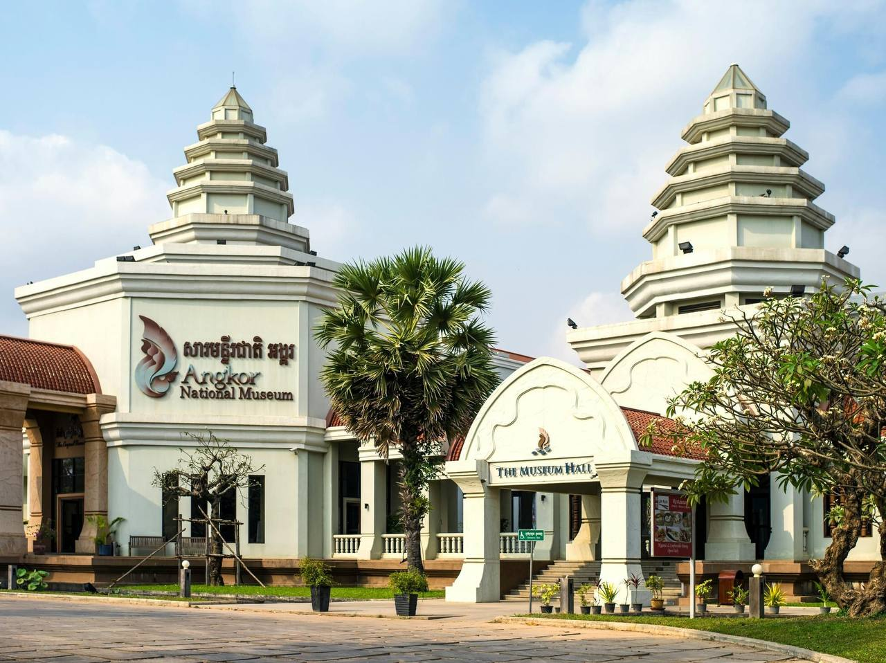
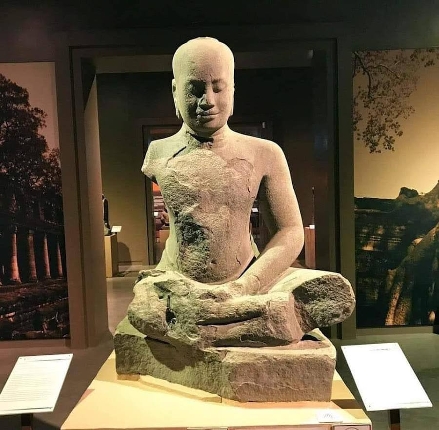
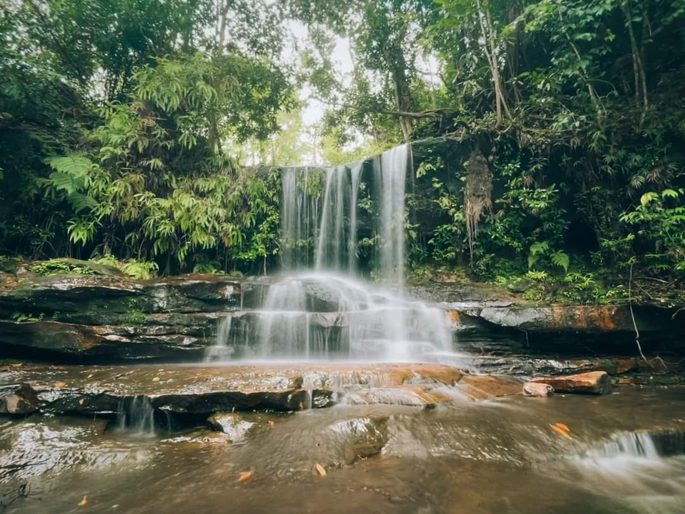
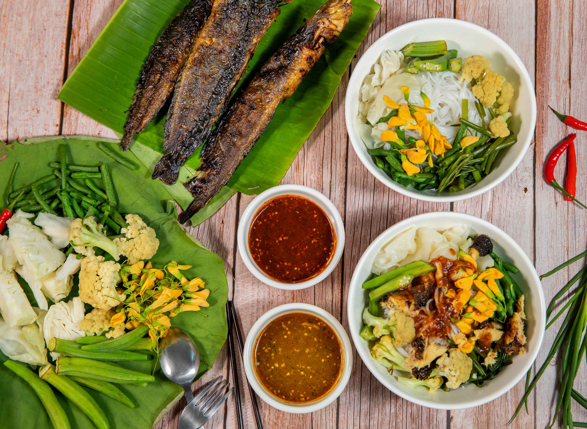
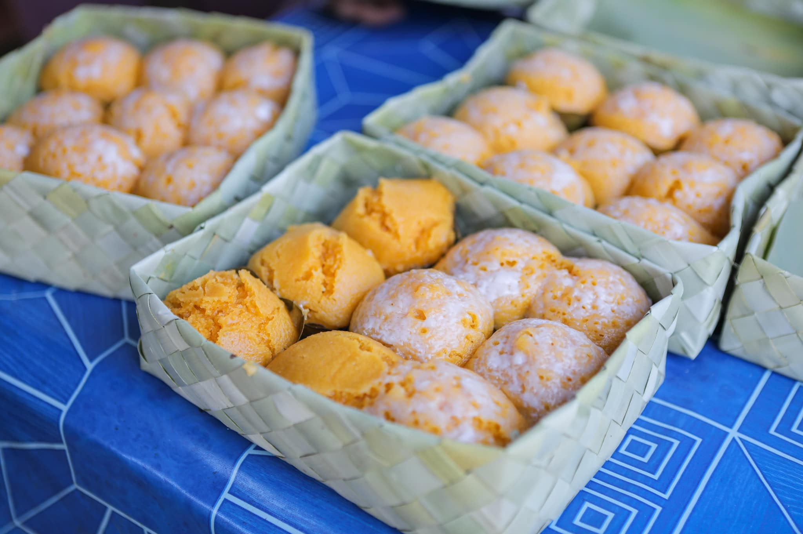
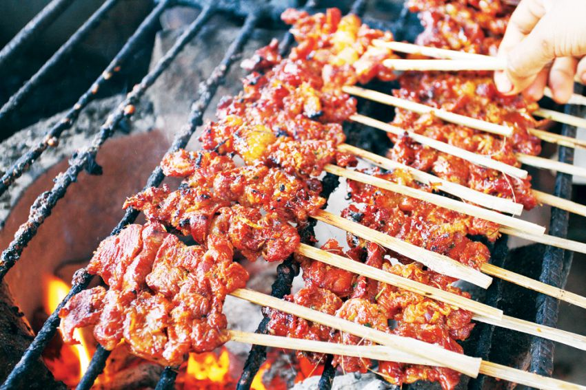

តោះមកទស្សនារូបភាព ជាមួយសម្រស់ដ៏ស្រស់ស្អាត ដែលបង្ហាញពីភាពទាក់ទាញរកជាតិសាសន៍ឯណាមកប្រៀបផ្ទឹមពុំបានឡើយ របស់ប្រាសាទអង្គរវត្ត តែងដក់ជាប់បេះដូងជនរួមជាតិខ្មែរមិនអាចបំភ្លេចបាន!
កម្សាន្ត ៖ ដូនតាខ្មែរយើងបានបន្សល់ទុកនូវសម្បត្តិវប្បធម៌ អក្សរ ភាសា ទំនៀមទម្លាប់ប្រពៃណីជាច្រើនរាប់មិនអស់ ជាពិសេសសំណង់ស្ថាបត្យកម្មដ៏មហស្ចារ្យរបស់ខ្មែរដែលដុះឡើង នៅលើទឹកដីនៃខេត្តសៀមរាប គឺប្រាសាទអង្គរវត្តនេះឯង។
ជាមួយគ្នានេះដែរ បើនិយាយដល់ប្រាសាទអង្គរវត្ត ឬយើងហៅថាអង្គរតូច ពេលណាគឺប្រជាជនខ្មែរគ្រប់រូបតែងតែស្ញប់ស្ញែងក្នុងចិត្ត មានមោទនភាពយ៉ាងខ្លាំង ចំពោះសំណង់ស្ថាបត្យកម្មដ៏មហស្ចារ្យរបស់ដូនតាខ្មែរ ដែលបង្ហាញឡើងនូវកេរមរតក វប្បធម៌ដ៏ថ្កើងថ្កាន ជាមួយអាយុកាលដ៏យូរលង់ណាស់មកហើយ និងនៅតែរក្សារូបរាងទាក់ទាញប្រៀបដូចជាទេពនិម្មិតយ៉ាងដូច្នេះដែរ។ ទន្ទឹមនឹងសោភ័ណភាព ក៏ដូចជាទេសភាពដ៏ស្រស់ត្រកាលរបស់ប្រាសាទអង្គរវត្ត យើងពិតជាទទួលស្គាល់មិនអាចប្រកែកបានថា សម្រស់របស់ប្រាសាទនេះគឺទាក់ទាញខ្លាំងយ៉ាងណា ទោះបីយើងមើលពីជ្រុងខាងណា ក៏នៅតែឃើញស្អាត ដែលលេចចេញនូវសម្រស់ដ៏មហស្ចារ្យពិតៗ អាចនិយាយបានថាគឺមានតែមួយលើលោក ល្អហួសរកអ្វីមកប្រៀបផ្ទឹមពុំបានឡើយ។ ក្រៅពីភាពទាក់ទាញជាមួយភាពលេចធ្លោរបស់សំណង់ប្រាសាទនេះហើយ ទីនោះក៏ជាកន្លែងដែលពោរពេញទៅដោយបរិយាកាសបរិសុទ្ធ វាលស្មៅពណ៌បៃតងខ្ចីដំឡើងលើយ ដើមឈើធំៗដែលផ្តល់ម្លប់ត្រជាក់ត្រជុំយើងគ្របដណ្តប់នៅជុំវិញ មានស្រះទឹកថ្លាយង់ ព្រមជាមួយសំឡេងសត្វយំបង្កើតជាតន្ត្រីដាស់អារម្មណ៍ទៀត វាវាកាន់តែធ្វើឲ្យអ្នកទេសចរមិនចង់ឈានជើងចេញពីអង្គរវត្តឡើយ។ យ៉ាងណាមិញ មិនថានៅពេលរដូវវស្សា រដូវប្រាំង ពេលធ្លាក់ ក្រោយភ្លៀងធ្លាក់ ពេលថ្ងៃលិច ថ្ងៃរះ សោភ័ណភាពរបស់ប្រាង្គប្រាសាទនេះ មើលទៅក៏នៅតែស្អាត ល្អ ក្នុងកែវភ្នែកអ្នកទស្សនាគ្រប់ពេលវេលា មើលយ៉ាងណាក៏នៅតែល្អឥតខ្ចោះដដែល។
អង្គរវត្ត ឬប្រាសាទអង្គរតូច មានទីតាំងស្ថិតនៅភាគខាងជើងនៃក្រុងសៀមរាប នៃខេត្តសៀមរាប ដែលមានចម្ងាយ ៧គីឡូម៉ែត្រពីទីរួមខេត្តសៀមរាប តាមផ្លូវកូម៉ៃ ឬផ្លូវសាលដឺ ហ្គោល។
ព្រឹត្តិការណ៍ពិសេសនៅតំបន់អង្គរ

«អង្គរសង្ក្រាន្ត»
គឺជាព្រឹត្តិការណ៍វប្បធម៌ប្រចាំឆ្នាំដ៏ធំរបស់កម្ពុជា ចាប់ផ្តើមតាំងពីឆ្នាំ ២០១៣
ក្នុងគោលបំណងអបអរសាទរពិធីបុណ្យចូលឆ្នាំថ្មីប្រពៃណីខ្មែរ និងបង្ហាញវប្បធម៌ខ្មែរគ្រប់ទម្រង់
ទាំងបេតិកភណ្ឌរូបី និងអរូបី។
ចំណុចទាក់ទាញសំខាន់ៗជារៀងរាល់ឆ្នាំ៖
សិល្បៈទស្សនីយភាពបុរាណ៖ មានការសម្តែងល្ខោនមហោរី ល្ខោនខោល និងរបាំបុរាណខ្នាតធំ
ដែលសិក្សាស្រាវជ្រាវត្រឹមត្រូវតាមក្បួនខាតដូនតា។
ល្បែងប្រជាប្រិយខ្មែរ៖ មានការនាំយកល្បែងប្រជាប្រិយជាង ២០ ប្រភេទ
(ដូចជាល្បែងទាញព្រ័ត្រជាដើម)
ដែលខ្លះដកស្រង់ចេញពីចម្លាក់តាមប្រាសាទ មកឱ្យភ្ញៀវទេសចរលេងកម្សាន្ត។
ម្ហូបអាហារ៖ មានការដាក់បង្ហាញ និងលក់ម្ហូបអាហារ ព្រមទាំងបង្អែមខ្មែរឆ្ងាញ់ៗមកពីតាមសហគមន៍។

«សមរាត្រីប្រាសាទអង្គរ»
គឺជាបាតុភូតធម្មជាតិដ៏អស្ចារ្យដែលព្រះអាទិត្យរះចំកំពូលកណ្តាលនៃប្រាសាទអង្គរវត្ត។
ព្រឹត្តិការណ៍នេះស្តែងឱ្យឃើញពីភាពប៉ិនប្រសប់ដ៏ខ្ពង់ខ្ពស់របស់បុព្វបុរសខ្មែរ
ក្នុងការគិតគូរយ៉ាងល្អិតល្អន់លើប្លង់ស្ថាបត្យកម្ម ការសាងសង់ ការគណនាតាមប្រព័ន្ធគណិតវិទ្យា
ដំណើរតារាសាស្ត្រ រួមផ្សំជាមួយជំនឿ។
ពេលវេលាកើតឡើងជារៀងរាល់ឆ្នាំ៖
ក្រសួងទេសចរណ៍បានឱ្យដឹងថា បាតុភូតនេះតែងតែដងកើតឡើងចំនួន ២ដង ក្នុងមួយឆ្នាំ នៅចន្លោះម៉ោង
៥:០០នាទីព្រឹក ដល់ម៉ោង ៦:៣០នាទីព្រឹក៖
លើកទី១ (សមរាត្រីរដូវប្រាំង - Vernal Equinox)៖ កើតឡើងនៅចន្លោះថ្ងៃទី២១ ដល់ ២៣ ខែមីនា។
លើកទី២ (សមរាត្រីរដូវវស្សា - Autumnal Equinox)៖ កើតឡើងនៅចន្លោះថ្ងៃទី២១ ដល់ ២៣ ខែកញ្ញា
(ជាក់ស្តែងសម្រាប់ឆ្នាំ២០២៥ នឹងកើតឡើងចំថ្ងៃទាំងនេះ)។
សារមន្ទីរជាតិអង្គរ

សារមន្ទីរជាតិកម្ពុជា គឺជាកន្លែងទេសចរណ៍ដែលចាំបាច់ទស្សនាសម្រាប់អ្នកដែលចាប់អារម្មណ៍លើវប្បធម៌ និងប្រវត្តិសាស្ត្រខ្មែរ។ សារមន្ទីរនេះមានកន្លែងប្រមូលផ្តុំវត្ថុបុរាណនិងស្នាដៃសិល្បៈដ៏គួរឱ្យចាប់អារម្មណ៍ពី សម័យកាលផ្សេងៗគ្នានៃអតីតកាលដ៏សម្បូរបែបរបស់កម្ពុជាដែលមានទីតាំងនៅក្នុងរាជធានីភ្នំពេញ ។ នៅពេលអ្នកអញ្ជើញចូលទៅក្នុងសារមន្ទីរ អ្នកនឹងបានជួបរឿងគួរឱ្យភ្ញាក់ផ្អើលដោយមានការដាក់បង្ហាញដ៏ អស្ចារ្យនៃគ្រឿងស្មូន និងវត្ថុបុរាណធ្វើពីលង្ហិន ដែលមានអាយុកាលតាំងពីសម័យមុនអង្គរនៃហ្វូណននិង ចេនឡា (សតវត្សទី ៤ ដល់ទី ៩) ។ បំណែកដ៏កម្រទាំងនេះ បង្ហាញឱ្យឃើញនូវអរិយធម៌ដំបូង ដែលបាន ចាក់គ្រឹះសម្រាប់វប្បធម៌ខ្មែរ។
ធ្វើដំណើរទៅចំនុចកណ្តាលនៃទីធ្លា អ្នកនឹងឃើញខ្លួនអ្នកហ៊ុំព័ទ្ធដោយគំរូដ៏អស្ចារ្យនៃស្ថាបត្យកម្មខ្មែររួមទាំង រូបសំណាកដែលមានមុខបួនដែលគេស្គាល់ថាជា “ស្នាមញញឹមនៃអង្គរ”។ សូមចំណាំថា ការថតរូបមិនត្រូវ បានអនុញ្ញាតនៅខាងក្នុងសារមន្ទីរទេប៉ុន្តែសូមរីករាយក្នុងការចាប់យកភាពស្រស់ស្អាតចំនុចពិសេសទីធ្លានេះ។ សម្រាប់បទពិសោធន៍កាន់តែស៊ីជម្រៅបន្ថែមអ្នកអាចជ្រើសរើសដំណើរកម្សាន្តដែលមានការណែនាំ ពីសារមន្ទីរជាតិ។
សារមន្ទីរជាតិកម្ពុជាត្រូវបានសាងសង់ឡើងនៅចន្លោះឆ្នាំ ១៩១៧ និង ១៩២០ដោយអាជ្ញាធរនាសម័យ អាណានិគមបារាំង។សារមន្ទីរជាតិនេះត្រូវបានសម្គាល់ឃើញថាមានរចនាសម្ព័ន្ធដីឥដ្ឋដ៏ប្រណិត។ការតុប តែងសួនទីធ្លាដែលស្ថិតនៅភាគខាងជើងនៃ ព្រះបរមរាជវាំង (តំណភ្ជាប់វត្ថុមានតម្លៃនៅខាងក្នុងព្រះបរមរាជវាំង) ផ្តល់នូវជម្រើសមួយដ៏ស្ងប់ស្ងាត់ពីផ្លូវក្នុងទីក្រុងដ៏អ៊ូអរ។ កន្លងមកសារមន្ទីរបានឆ្លងកាត់ការជួសជុល និងការពង្រីកជាច្រើនកន្លែង ដើម្បីមានកន្លែងបន្ថែមក្នងការទុកដាក់ចម្លាក់ខ្មែរនិងវត្ថុមានតម្លៃផ្សេងៗទៀត ដែលអ្នកឃើញសព្វថ្ងៃនេះ។ អ្នកចូលចិត្តប្រវត្តិសាស្ត្រនឹងចាប់អារម្មណ៍ចំពោះរចនាសម្ព័ន្ធបំផុសគំនិតរបស់សារមន្ទីរជាតិកម្ពុជា និងបង្ហាញភាពខុសប្លែកចំពោះប្រភពនៃអាណានិគមបារាំង។សារមន្ទីរនេះបានឱ្យតម្លៃនិងដឹងគុណចំពោះ វប្បធម៌ និងបេតិកភណ្ឌរបស់កម្ពុជា ហើយបានលើកកម្ពស់ការយល់ដឹងគោលបំណងអប់រំនិងបំផុសគំនិត ភ្ញៀវទេសចររបស់ខ្លួនក្នុងដំណើរអំពីអតីតកាល ដូច្នេះពួកគាត់នឹងយល់ពីសង្គមបច្ចុប្បន្ន។

អ្នកទស្សនាអាចចំណាយពេលដើម្បីស្វែងរកការប្រមូលផ្តុំដ៏ធំនៃវត្ថុជាង ១៤០០០ ។ វត្ថុនីមួយៗបង្ហាញពីការវិវត្តន៍នៃសិល្បៈ និងវប្បធម៌ខ្មែរតាមរបៀបខុសប្លែកពីគ្នា។ ចំណុចសំខាន់ៗមួយចំនួន រួមមាន រូបសំណាក ព្រះបាទជ័យវរ្ម័នទី៧ ដ៏គួរឱ្យទាក់ទាញនិងស្នាដៃផ្សេងៗទៀត ពីសម័យអង្គរ ថែមទាំងមានគ្រឿងអលង្ការ និងសេរ៉ាមិចដ៏ប្រណិត។ សារមន្ទីរនេះមានភាពស្រស់ស្អាតទាំងនៅខាងក្រៅនិងខាងក្នុង។ ឆ្លងកាត់ចំនុចកណ្តាលនៃទីធ្លា អ្នកនឹងឃើញគំរូដ៏អស្ចារ្យនៃស្ថាបត្យកម្មខ្មែរផងដែរ។ រូបចម្លាក់តម្រៀបជួរជាច្រើនធ្វើឱ្យមានអនុស្សាវរីយ៍ដ៏ ល្អក្នងដំណើរកំសាន្តរបស់អ្នក។ ក្នុងចំណោមរូបសំណាក អ្នកនឹងឃើញរូបបដិមាមុខបួន ដែលគេស្គាល់ថា “ស្នាមញញឹមនៃអង្គរ”។ បន្ទាប់មក ការទៅលេងវិចិត្រសាលសំរិទ្ធ គឺជាឱកាសតែមួយគត់ក្នុងការមើលវិធីសាស្រ្តនៃការចាក់ស្ពាន់។ ទាំងនេះគឺជាការអនុវត្តដែលប្រើក្នុងសម័យអង្គរដែលធ្វើឱ្យវាក្លាយជាមេរៀនដ៏គួរឱ្យចាប់អារម្មណ៍មួយអំពី របៀបដែលចម្លាក់ និងការសាង់សង់រូបចម្លាក់។ ហើយនៅជិតវិចិត្រសាលសំរិទ្ធគឺជាបណ្តុំកម្រនៃរូប ព្រះពុទ្ធក្រោយសម័យអង្គរផងដែរ ហើយមានប្រមូលផ្តុំនូវរូបព្រះពុទ្ធដ៏កម្រក្រោយសម័យអង្គរ ដែលនៅ ជិតវិចិត្រសាលសំរិទ្ធ។ចំណាយពេលមើលការជ្រើសរើសរូបចម្លាក់ថ្មភក់ដែលដាក់តាំងបង្ហាញនិងមានអាយុកាលតាំងពីសតវត្សទី៦។ សម្រាប់បទពិសោធន៍កាន់តែស៊ីជម្រៅ ភ្ញៀវអាចមានជម្រើសទទួលនូវមគ្គទេសក៍ណែនាំ ជាមួយនឹង ជម្រើសភាសាអង់គ្លេស បារាំង អេស្បាញ និងជប៉ុន។ អ្នកទស្សនាជាច្រើនមកពីទីជិតឆ្ងាយអាចស្វែង យល់បន្ថែមអំពីប្រវត្តិ និងសារៈសំខាន់នៃវត្ថុបុរាណនីមួយៗនៅពេលអ្នកដើរកម្សាន្តក្នុងសារមន្ទីរ។សារមន្ទីរជាតិអង្គរមានទីតាំងស្ថិតនៅក្នុងភូមិសាលាកន្សែង សង្កាត់ស្វាយដង្គំ ក្រុងសៀមរាប ខេត្តសៀមរាបទី តាំងនេះស្ថិតនៅតាមបណ្តោយផ្លូវពីក្រុងសៀមរាប ឆ្ពោះទៅកាន់តំបន់ប្រាសាទបុរាណអង្គរ និងមានចម្ងាយប្រមាណ ៥គីឡូម៉ែត្រ ពីទីរួមខេត្តសៀមរាប។
រមណីយដ្ឋាន ភ្នំគូលែន

សៀមរាប៖ ជួរភ្នំគូលែន មានទីតាំងទេសចរណ៍ធម្មជាតិ និងវប្បធម៌ប្រវត្តិសាស្ត្រជាច្រើនកន្លែង។
ក្នុងចំណោមទីតាំងទេសចរណ៍ល្បីៗ ទឹកធ្លាក់ភ្នំគូលែន ទាក់ទាញទេសចរច្រើនជាងគេ ដ្បិតថា ទីនេះ
មានទឹកធ្លាក់ដ៏ត្រជាក់ ជាច្រើនដំណាក់ និងមានទីធ្លាធំទូលាយ។ អ្នកមានជំនឿ តែងតែចាត់ទុកទឹកធ្លាក់ភ្នំគូលែន
និងទឹកធ្លាក់ក្បាលស្ពាន ជាកន្លែងដ៏ស័ក្ដសិទ្ធិសម្រាប់ជម្រះអស់រឿងសៅហ្មងទាំងឡាយ។ ជារៀងរាល់រដូវបុណ្យទាន
ភ្នំគូលែន មានទេសចរច្រើន កុះករ។ ទេសចរជាតិ និងអន្តរជាតិ តែងតែងូតទឹកនៅកន្លែងទឹកធ្លាក់នេះ
មុននឹងបន្តដំណើរទៅទស្សនារមណីយដ្ឋានល្បីៗជាច្រើនទៀត។ រមណីយដ្ឋានភ្នំគូលែន
មានចម្ងាយ៥០គីឡូម៉ែត្រពីទីរួមខេត្តសៀមរាប ។
ភ្នំគូលែន» ស្ថិតនៅក្នុងឃុំខ្នងភ្នំ ស្រុកស្វាយលើ និងស្រុកវ៉ារិន ចម្ងាយប្រមាណ
៦០គីឡូម៉ែត្រពីក្រុងសៀមរាប និងប្រហែល ២៥គីឡូម៉ែត្រពីប្រាសាទបន្ទាយស្រី ។
ម្ហូបអាហារ ពេញនិយម
ប្រសិនបើលោកអ្នកមានគម្រោង ទៅលេងកមម្សាន្តនៅខេត្តសៀមរាប យើង ចង់ណែនាំលោកអ្នកនូវម្ហូបអាហារទាំងបីនៅខេត្តសៀមរាប ដែលលោកអ្នកមិនគួររំលងប្រយ័ត្នស្ដាយក្រោយនូវរសជាតិដ៏ឆ្ងុយឆ្ងាញ់៖

នំបញ្ចុកទឹកប្រហុក៖ នំបញ្ចុកទឹកប្រហុក គឺជាមុខម្ហូបថ្មីមួយដែលច្នៃប្រឌិតពីអ្នកស្រុកអង្គរ
ហើយបានក្លាយជាមុខម្ហូបដ៏ពេញនិយមនៅខេត្តសៀមរាប ។ ភាគច្រើនភ្ញៀវទេសចរណ៍ដែលទៅលេងខេត្តសៀមរាប
គឺមិនដែលរំលងឡើយនូវនំបញ្ចុកទឹកប្រហុកមួយនេះ។ សម្រាប់អ្នកដែលមិនទាន់បានញាំុ អាចរកបាននៅម្ដុំមុខអង្គរ។
មុខម្ហួបមួយនេះ មានបន្លែស្រុះដូចជា ត្រកួន ស្ពៃក្ដោប សណ្ដែកបណ្ដុះ និងសណ្ដែកកួរ ឬអាចបន្ថែមជាមួយត្រីអាំង
ស្រូបជាមួយទឹកប្រហុក មានរសជាតិប្លែក ឆ្ងាញ់មួយបែបពីនំបញ្ចុកទឹកសម្ល។ បើយើងនិយាយពីម្ហូបមួយនេះ
លោកអ្នកប្រាកដជាជ្រាបហើយ គឺលើរសជាតិដ៏ឆ្ងាញនៃទឹកប្រហុកដែលមិនអាចមិនភ្លេចបាន។

នំអាកោត្នោតព្រះដាក់៖ បើនិយាយពីភូមិព្រះដាក់លោកអ្នកមិនអាចរំលងបានឡើយនូវមុខម្ហូបម្យ៉ាង រោយដូងពីលើនំព័ណ៌លឿងទំ ខ្ចប់ស្លឹកចេករីកឡើងប្រេះភាយក្លិនឈ្ងុយខ្ទិះដូងកាត់ច្រមុះភាយៗគឺ នំអាកោត្នោតរបស់អ្នកភូមិព្រះដាក់។ នៅតាមបណ្តោយផ្លូវ ក្នុងភូមិព្រះដាក់ មានកន្លែងលក់នំអាកោត្នោតច្រើនកន្លែង ដែល សុទ្ធតែមានភាព ល្បីល្បាញ មានរសជាតិឆ្ងាញ់ អនាម័យល្អ មានការគាំទ្រជាហូរហែ ពីសំណាក់ អ្នកធ្លាប់បាន ទទួលទាន ទាំងនៅក្នុងតំបន់ ជាពិសេសភ្ញៀវទេសចរ មកពីគ្រប់ទិសទីបានមកជួយទិញមិនចេះដាច់ឡើយ។

សាច់គោអាំងវត្តដំណាក់៖
សាច់គោអាំងនៅវត្តដំណាក់ គឺមានភាពល្បីល្បាញដោយសារតែ លោកអ្នកអាចយល់ច្រលំ នៅពេលជិះកាត់ទីនោះមានផ្សែងអុ៊យៗ
អាចនឹងយល់ថាមានអគ្គីភ័យ តែតាមពិតគឺគេកំពុងតែអាំងសាច់គោដោតលាយខ្លាញ់នៅខាងចុង
ហើយគេប្រែចុះឡើងដោយលាបទឹកគ្រឿងពណ៌ក្រហមបន្ថែមរសជាតិ។
លើសពីនេះ សាច់គោដោតចង្កាក់អាំងនៅវត្តដំណាក់ បើបានញ៉ាំផ្ទាប់ជាមួយជ្រក់ល្ហុងស្រស់ៗ
រួមជាមួយនឹងនំប៉័ងក្តៅៗស្រួយៗរឹតតែឆ្ងាញ់។
សម្រាប់រសជាតិសាច់គោអាំងម្ដុំវត្តដំណាក់នេះមិនត្រឹមតែត្រូវចិត្តអតិថិជនខ្មែរប៉ុណ្ណោះទេជារឿយៗគេក៏ឃើញវត្តមានទេសចរបរទេសមកអង្គុយទទួលទានផងដែរ។